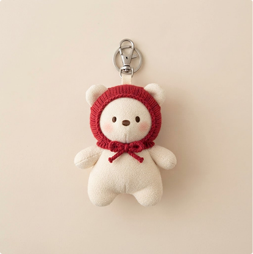

모모의 한 해
거창한 계획은 없어요. 계절마다 꼭 하나씩, 그때만 할 수 있는 일을 합니다.
봄 · 꽃잎 모으기
벚꽃 길에서 떨어진 꽃잎을 주워 노트 사이에 말려 둬요.
여름 · 녹기 전에 먹기
바닷가 그늘에서 아이스크림이 녹기 전에 다 먹는 게 목표예요.
가을 · 낙엽 밟기
바스락 소리가 제일 큰 길을 찾아 일부러 돌아가요.
겨울 · 선물 포장
줄 사람 이름을 적어 두고 하나씩 리본을 묶어요.
MOMO'SFOUR SEASONS
뽀글뽀글한 털에 니트 보닛을 쓴 곰 인형. 계절이 바뀔 때마다 보닛과 옷을 갈아입어요.
양쪽 구멍으로 귀가 쏙
늘 발그레한 볼
계절마다 바뀌는 색
뛸 때만 보이는 젤리
책상 위에도, 가방에도. 모모를 곁에 두는 작은 방법들.

안아주고 싶은 기본 인형

가방에 다는 작은 모모

따뜻한 하루를 담는 컵

둘이 나눠 다는 키링

소파 위에 두는 모모
모모는 계절마다 그때만 할 수 있는 일을 하고, 그 하루를 사진으로 남겨요. 지금 계절의 모모를 꺼내 볼게요.
카드를 집어서 테이블 위에서 옮겨 보세요
계속 내려 보세요
거창한 계획은 없어요. 계절마다 꼭 하나씩, 그때만 할 수 있는 일을 합니다.
벚꽃 길에서 떨어진 꽃잎을 주워 노트 사이에 말려 둬요.
바닷가 그늘에서 아이스크림이 녹기 전에 다 먹는 게 목표예요.
바스락 소리가 제일 큰 길을 찾아 일부러 돌아가요.
줄 사람 이름을 적어 두고 하나씩 리본을 묶어요.